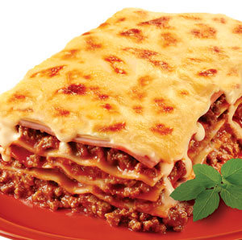

Lasanha Bolonhesa
Autor: Giovanni Ribeiro

Lasanha ao molho Bolonhesa.
Tempo de Preparação: 50 minutos
Rendimento: 12 porções
Informação Nutricional:
450 kcal,
50 g
Ingredientes:
-
500 gr de massa para lasanha semi-pronta
-
2 lata(s) de molho bolonhesa
-
1 lata(s) de creme de leite
-
400 gr de mussarela
Modo de Preparo:
1. Misture o creme de leite ao molho de tomateformando uma mistura homogênea.
2. Pique a mussarela e reserve.
3. Unte o fundo de um refratário com azeite ou margarina, coloque um pouco do molho já pronto e misturado.
4. Forre com a massa.
5. Coloque mais um pouco de molho, cubra com mussarela, e um pouco mais de molho e assim vá alternando.
6. A última camada deverá ser de mussarela e molho.
7. Leve ao forno coberta com papel alumínio por 20 minutos.
Dica: divida bem o molho para que nenhuma camada fique seca.
77 pessoas avaliaram essa receita
...